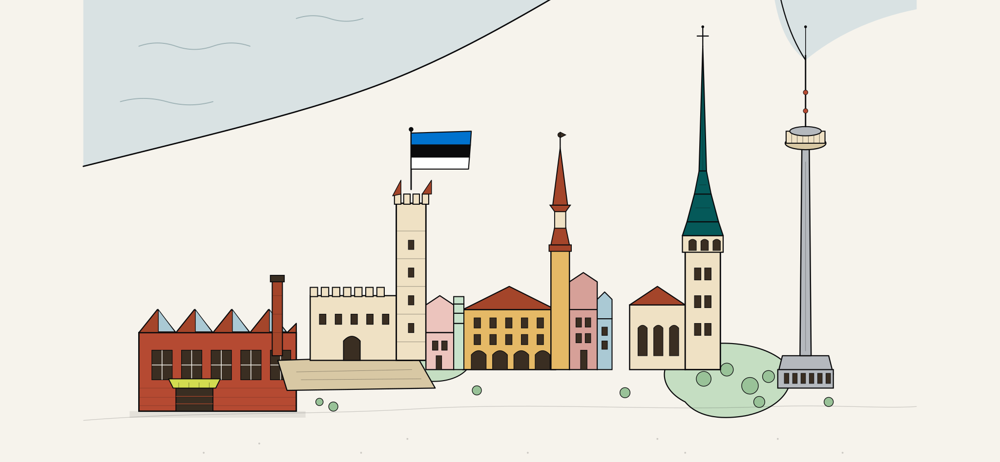
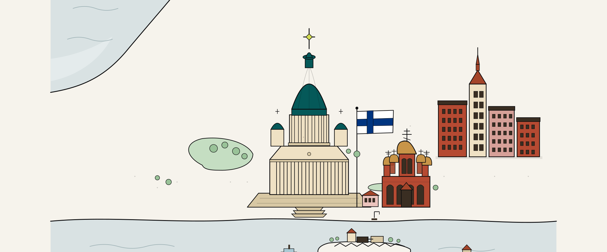
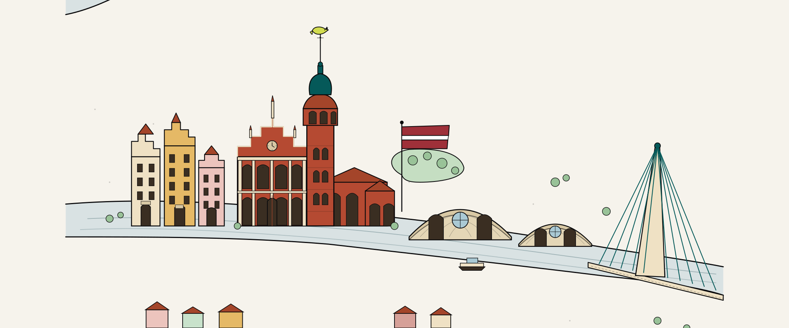

About
A curated guide to the other city.
WanderAlt is alternative culture in European cities, vouched for by human curators. Underground rooms, second-hand pages, late-night cinemas, noise gigs — the things that don’t make the visitor guide.
-

Tallinn
Live
-

Helsinki
Live
-

Riga
Live
What this is
Every WanderAlt pick is chosen by a human curator who lives in the city and cares about its underground. The largest thing on every screen is the curator’s quote — voice is the product. AI is the index that keeps the catalog clean; it never writes the editorial.
We’re live in Tallinn, with Helsinki and Riga in flight. Picks refresh on a weekly cadence — this is meant to read like a cultural weekly, not a feed.
-
01
A curator picks.
A human who lives in the city chooses a venue, a night, or a reading. Writes a one-line quote in their own voice.
-
02
AI cleans the index.
We use AI to deduplicate, geocode, classify and tag — everything that scales badly when humans do it. Never to write copy.
-
03
You read the weekly.
One Tonight pick, a handful for the week, an editorial column — published on a cadence, not a feed.
The curators
Each curator has a public profile and a small handful of picks per week. We don’t pay them — the deal is editorial control over their own section, a permanent home for their voice, and an audience that reads rather than scrolls.
If you write about your city the way our existing curators do (@sigmundtells, @notboring_riga, @katestrelca) get in touch — we’re always adding city by city.
For venues & promoters
We don’t list restaurants. We don’t take payment for placement. We don’t do advertorials. If your venue runs the kind of evenings our curators write about — experimental music, exhibitions with a point of view, late cinemas, readings, dance parties that aren’t for everyone — reach out and we’ll point a curator your way.
Need a pick removed or corrected? Email below. We aim to action genuine requests within 48 hours.
Privacy & data
We don’t track you. No analytics scripts, no ad networks, no third-party tracking. We use the edge logs from our host (Cloudflare) to see total traffic; those are anonymous and aggregate, and the same logs every web server keeps. The only data we store is what you give us:
- Your email, if you subscribe to the weekly digest or create an account. Used to send the digest and authenticate you. Never shared.
- Your bookmarks and taste preferences, in your browser’s localStorage (and synced to your account if signed in) so the app remembers what you saved.
That’s the entire list. We don’t need a cookie banner because we don’t use any cookies that aren’t strictly necessary for the app to function. To delete everything, sign in and use the Delete account button on your profile, or email us and we’ll handle it manually.
Built in the open
WanderAlt is open source. The website, ingest pipeline, edge functions and brand kit all live in one public repo. If something looks wrong, file an issue or a pull request — both reach the maintainers faster than email.
Contact
hello@wanderalt.app · replies in a few days, usually